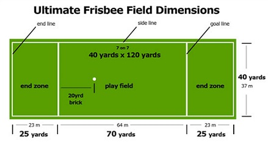

The Field: 70 yards by 40 yards, with end zones 25 yards deep.
Initiate Play: Each point begins with both teams in their respective end zone. The defense throws the disc to the offense.
Scoring: Each time the offense completes a pass in the defense's end zone, the offense scores a point. A regulation game has seven players per team.
Disc Movement: The disc may be advanced by completing a pass to a teammate. Players may not run with the disc. The person with the disc (thrower) has ten seconds to throw the disc. The defender guarding the thrower (marker) counts out the stall count.
Change of Possession: When a pass is not completed, the defense immediately takes possession of the disc and becomes the offense.
Substitutions: Players can only be substituted in after a score and during an injury timeout.
Non-contact: No physical contact is allowed between players. Picks and screens are also prohibited. A foul occurs when contact is made.
Fouls: When a player initiates contact on another player a foul occurs. When a foul disrupts possession, the play resumes as if the possession was retained. If the player committing the foul disagrees with the foul call, the play is redone.
Self-Officiating: Players are responsible for their own foul and line calls. Players resolve their own disputes.
Spirit of the Game: Ultimate stresses sportsmanship and fair play. Competitive play is encouraged, but never at the expense of respect between players, adherence to the rules, and the basic joy of play.
Get a full list of the rules here.